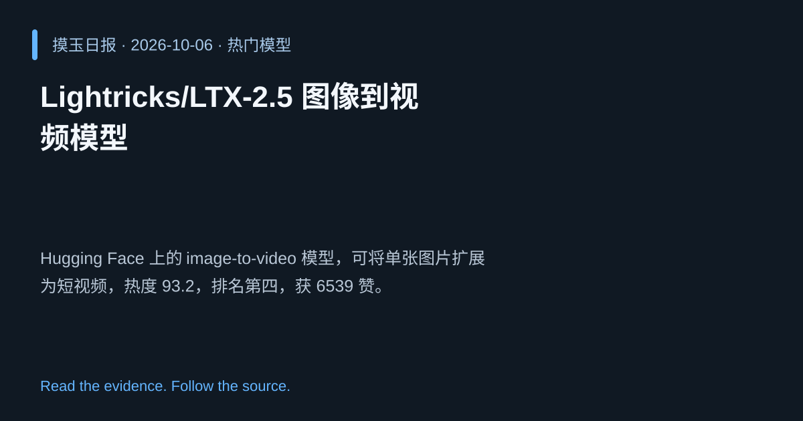

2026-10-06 · Asia/Shanghai · 热门模型 · #4
Lightricks/LTX‑2.5 图像到视频模型
Lightricks/LTX-2.5
Hugging Face 上的 image‑to‑video 模型，可将单张图片扩展为短视频，热度 93.2，排名第四，获 6539 赞。
为什么值得关注
图像到视频生成是新兴创意领域，模型受欢迎度显示潜在商业价值。
- 将静态图像转化为连贯短视频
- 支持多帧生成，提升创作效率
- 热度 93.2/100，社区点赞 6539 次

热度 93.2 / 100；排名与评分保留该期记录。